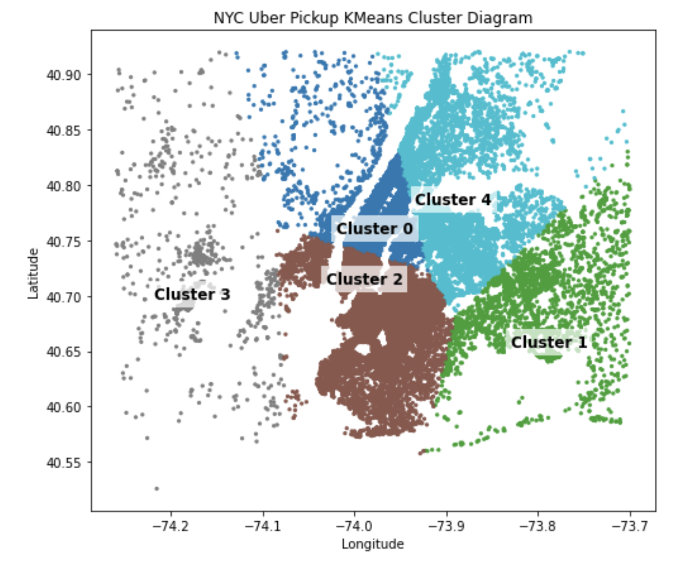

Uber pickups in New York City
Analysis of spatial and temporal ridehailing demand using Python, visualization, and KMeans clustering to identify high activity regions.
Data scientist focused on mobility, optimization, and intelligent transportation systems
I build analytical tools for transportation systems, combining data science, optimization, and statistical modeling to understand travel behavior and system performance. My interests increasingly focus on ADAS and autonomous vehicle systems, including perception modeling, sensor driven analytics, and the interaction between automated systems and real world traffic dynamics.

Analysis of spatial and temporal ridehailing demand using Python, visualization, and KMeans clustering to identify high activity regions.